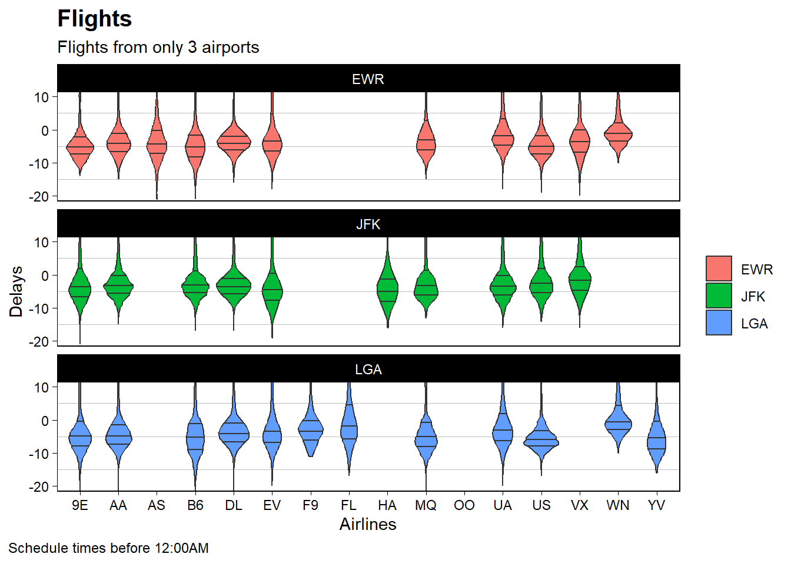

Your boss/client really liked the work you did previously in Reducing Gun Deaths and/or Wings to Fly. They want to use the graphic in a presentation they will be making at a keynote address for a professional conference. You will need to return to that work and polish the graph for presentation.
With your ever increasing understanding of visualization and programming, improve the graph that was previously turned in.
Load Packages
Step1
Attempt at least 2 of the book exercises in section 28.3.1: Use geom_text() to place text at the four corners of the plot.
Code
df2 <-filter(flights,carrier=="DL")%>%group_by(origin) %>%summarize(arrival_mean=mean(arr_delay, na.rm=TRUE))annotations <-data.frame(xpos =c(-Inf,-Inf,Inf,Inf),ypos =c(-Inf, Inf,-Inf,Inf),annotateText =c("Bottom Left (h0,v0)","Top Left (h0,v1)" ,"Bottom Right h1,v0","Top Right h1,v1"),hjustvar =c(0,0,1,1) ,vjustvar =c(0,1,0,1)) #<- adjustggplot(data = df2)+geom_col(mapping =aes(x=origin,y=arrival_mean, fill = origin))+theme_bw()+ylab("# Mean")+xlab("Airports")+ggtitle("Flights Delta")+theme(plot.title =element_text(hjust =0.5))+# title+geom_text(data=annotations,aes(x=xpos,y=ypos,hjust=hjustvar,vjust=vjustvar,label=annotateText))
Read the documentation for annotate(). How can you use it to add a text label to a plot without having to create a tibble?
Code
# Use this R-Chunk to clean & wrangle your data.ggplot(df2, aes(x=origin,y=arrival_mean)) +geom_point() +annotate("text",x =Inf, y =-Inf,label ="Airport Origin and arrival mean.", vjust =-1, hjust ="right" )
What are the four arguments to arrow()
Angle: Angle of arrow head
Length: Length of the arrow head
Ends: Ends of the line to draw arrow head
Type: Whether the arrow head is a closed or open triangle
ggplot(data = df1)+geom_violin(mapping =aes(x=carrier, y=dep_delay, fill=origin),draw_quantiles =c(0.25, 0.5, 0.75))+theme_linedraw()+coord_cartesian(ylim =c(-20, 10)) +facet_wrap(~ origin, nrow =3)+labs(title ="Flights", y ="Delays", x ="Airlines",subtitle="Flights from only 3 airports",caption ="Schedule times before 12:00AM")+theme(plot.caption =element_text(color="black", hjust=0, size=9, lineheight =1.2),plot.caption.position ="plot",legend.position ="right",legend.title =element_blank(),panel.grid.major.y =element_blank(),panel.grid.major.x =element_blank(),panel.grid =element_line(color ="gray"),plot.title =element_text(face="bold", color="black", hjust=0, size=15, lineheight =1.2))

Source Code
---title: "Polish Graphs"author: "Gabriel Guerrero"date: "`r format(Sys.time(), '%B %d, %Y')`"execute: keep-md: true warning: falseformat: html: code-fold: true code-tools: true---## BackgroundYour boss/client really liked the work you did previously in Reducing Gun Deaths and/or Wings to Fly. They want to use the graphic in a presentation they will be making at a keynote address for a professional conference. You will need to return to that work and polish the graph for presentation.With your ever increasing understanding of visualization and programming, improve the graph that was previously turned in.## Load Packages```{r}#| label: load_packages#| echo: false# Use this R-Chunk to load the libraries you will use in this file.library(tidyverse)library(nycflights13)```## Step1Attempt at least 2 of the book exercises in section 28.3.1:Use geom_text() to place text at the four corners of the plot.```{r}#| label: questionsdf2 <-filter(flights,carrier=="DL")%>%group_by(origin) %>%summarize(arrival_mean=mean(arr_delay, na.rm=TRUE))annotations <-data.frame(xpos =c(-Inf,-Inf,Inf,Inf),ypos =c(-Inf, Inf,-Inf,Inf),annotateText =c("Bottom Left (h0,v0)","Top Left (h0,v1)" ,"Bottom Right h1,v0","Top Right h1,v1"),hjustvar =c(0,0,1,1) ,vjustvar =c(0,1,0,1)) #<- adjustggplot(data = df2)+geom_col(mapping =aes(x=origin,y=arrival_mean, fill = origin))+theme_bw()+ylab("# Mean")+xlab("Airports")+ggtitle("Flights Delta")+theme(plot.title =element_text(hjust =0.5))+# title+geom_text(data=annotations,aes(x=xpos,y=ypos,hjust=hjustvar,vjust=vjustvar,label=annotateText))```Read the documentation for annotate(). How can you use it to add a text label to a plot without having to create a tibble?```{r}#| label: tidy_data# Use this R-Chunk to clean & wrangle your data.ggplot(df2, aes(x=origin,y=arrival_mean)) +geom_point() +annotate("text",x =Inf, y =-Inf,label ="Airport Origin and arrival mean.", vjust =-1, hjust ="right" )``` What are the four arguments to arrow()1. Angle: Angle of arrow head2. Length: Length of the arrow head3. Ends: Ends of the line to draw arrow head4. Type: Whether the arrow head is a closed or open triangle## Step2 Revisit the assigment```{r}#| label: picking variables 1#| echo: false#| #| fig-width: 8#| fig-height: 15df1=filter(flights,origin=="JFK"| origin=="EWR"| origin=="LGA", sched_dep_time<=1200)head(df1,10)ggplot(data = df1)+geom_violin(mapping =aes(x=carrier, y=dep_delay, fill=origin),draw_quantiles =c(0.25, 0.5, 0.75))+theme_linedraw()+coord_cartesian(ylim =c(-20, 10)) +facet_wrap(~ origin, nrow =3)+labs(title ="Flights", y ="Delays", x ="Airlines",subtitle="Flights from only 3 airports",caption ="Schedule times before 12:00AM")+theme(plot.caption =element_text(color="black", hjust=0, size=9, lineheight =1.2),plot.caption.position ="plot",legend.position ="right",legend.title =element_blank(),panel.grid.major.y =element_blank(),panel.grid.major.x =element_blank(),panel.grid =element_line(color ="gray"),plot.title =element_text(face="bold", color="black", hjust=0, size=15, lineheight =1.2))```